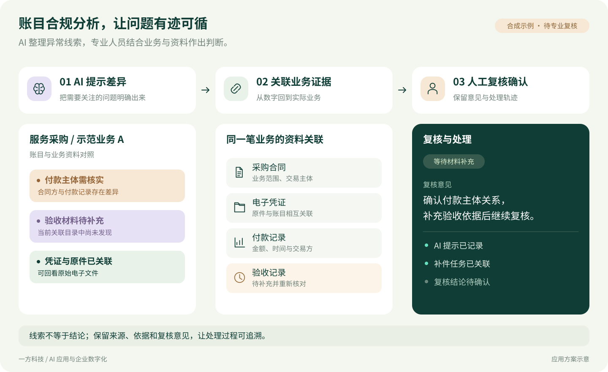
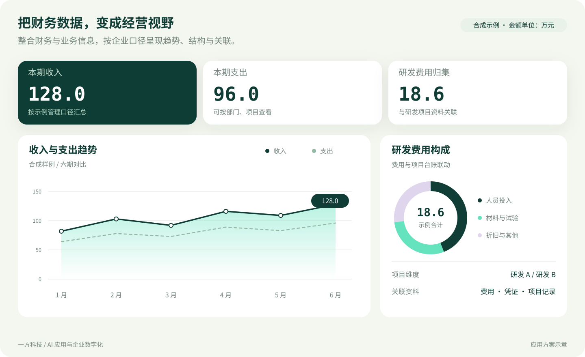
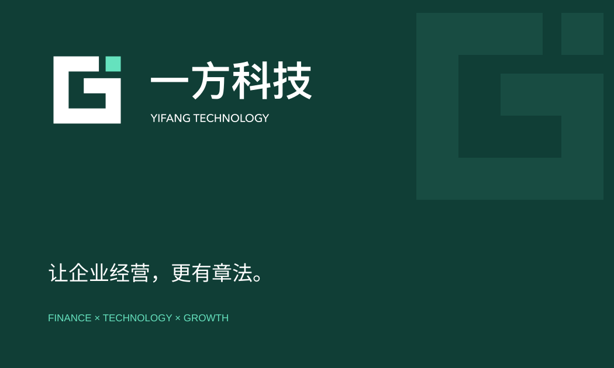
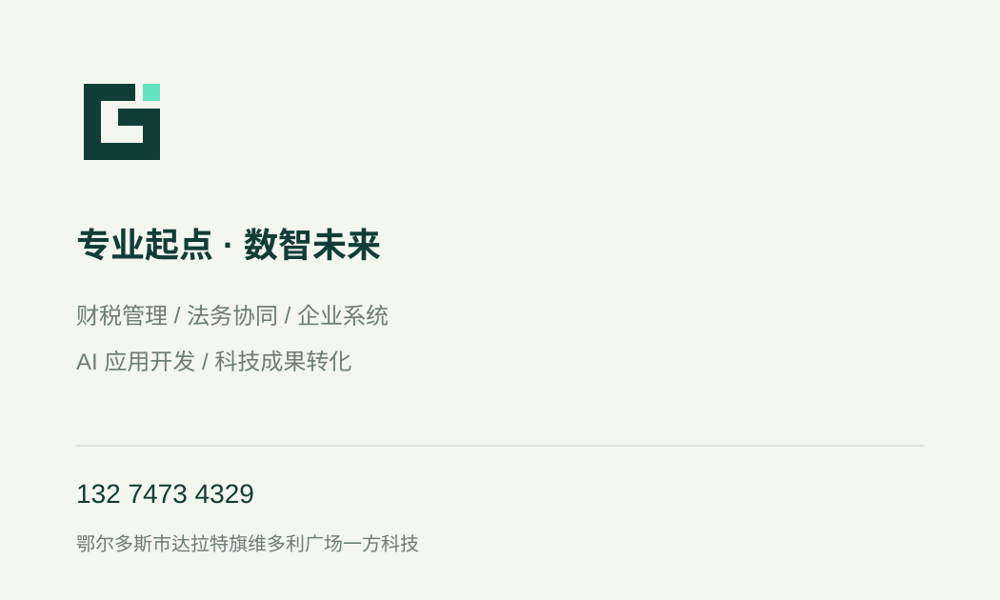

YIFANG TECHNOLOGY / BRAND SYSTEM
专业有方，
成长有方。
一方科技的视觉语言：专业、清晰、连接、行动。
用稳定的几何表达专业基础，用开放的节点关系表达 AI、系统与业务的协同。
企业 AI 应用与系统服务AI APPLICATIONS · WORKFLOWS · ENTERPRISE SYSTEMS
01 / IDENTITY
一横为基，方寸成势。
保留原有标志的开放方形结构与独立节点。LOGO 字形已转为路径，可用于标准组合、单色与反白场景。
建议完整标志最小显示宽度 160 px，独立图形最小 24 px；留白不小于标志笔画宽度。保持比例与色彩，不拉伸或额外添加描边。
02 / COLOR & TYPE
深松绿稳住专业，
薄荷青点亮技术。
浅色留白让信息清楚，状态色辅助识别。正文优先可读性，图表不依靠颜色独自传达含义。
DISPLAY / 大标题把 AI 用进业务，
让企业高效运转。
让企业高效运转。
BODY / 信息表达
以 AI 应用、业务工作流与企业系统，连接经营数据、专业协同和研发管理。
中文使用设备系统字体；强调内容、结构与可读性，不分发第三方字体文件。03 / CONNECTED SYSTEMS
系统关系，就是视觉语言。
节点、分支和分层体现数据与人员如何协同。流程图用于解释服务价值，避免把概念示意呈现成客户实绩。

04 / APPLICATION SCENARIOS
专业场景，清楚呈现。
以下为独立绘制的应用方案示意，不是浏览器截图。图表数值均为合成示例。



05 / BRAND APPLICATION
从数字界面，到日常接触。
名片与基础品牌物料沿用同一套标志、色彩和信息层级。


名片为视觉版式。实际印刷前，请结合纸张、尺寸、出血与色彩管理进行制作检查。